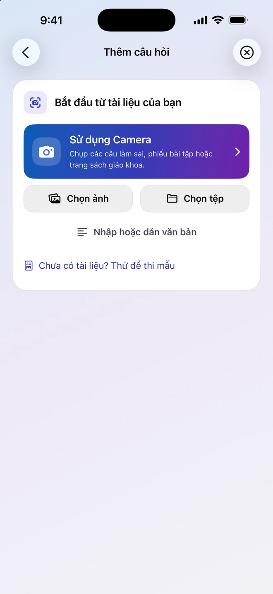
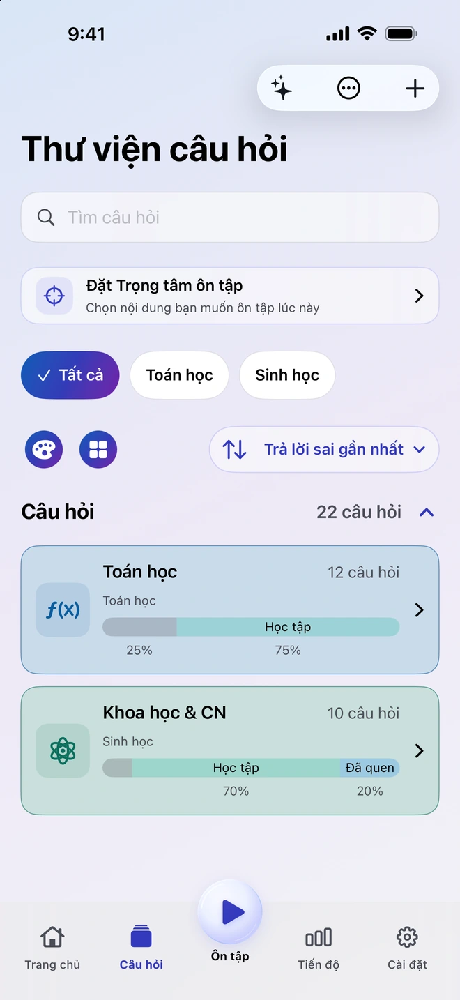
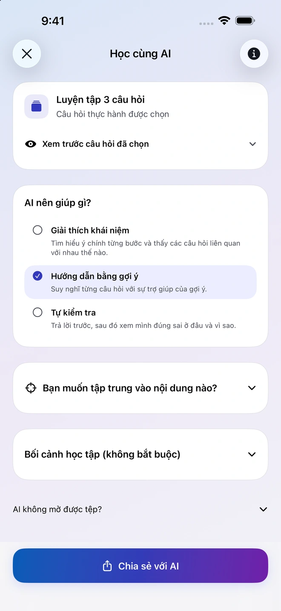
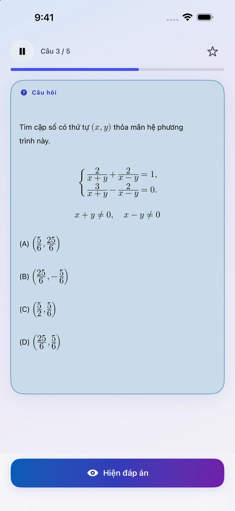
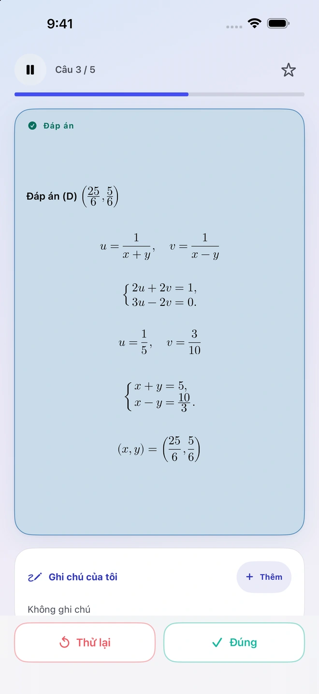
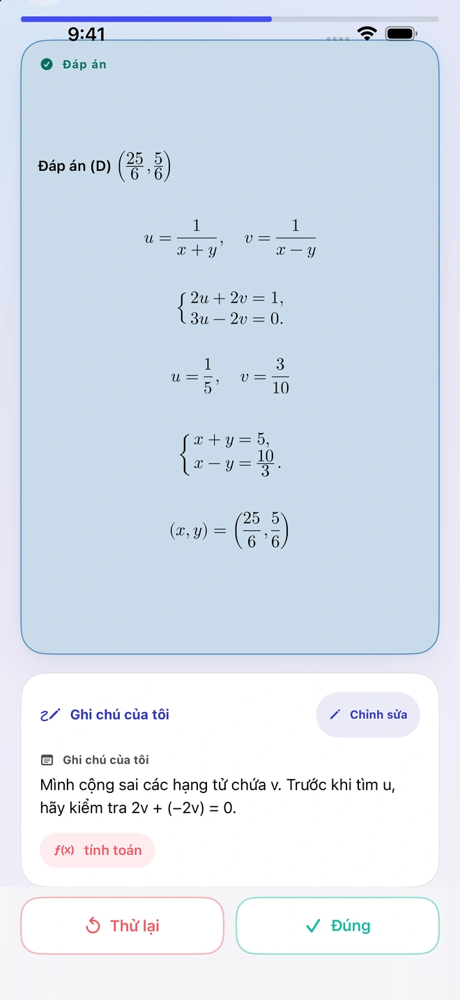
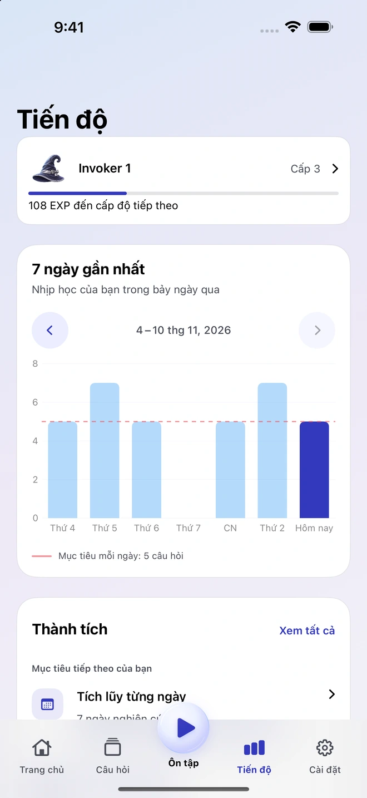

Tạo câu hỏi từ tài liệu của bạn
Thêm ảnh, PDF, tài liệu hoặc ghi chú. Quiz Invoker chuẩn bị tài liệu và chỉ dẫn cho ứng dụng AI bên ngoài tương thích mà bạn chọn. Kiểm tra kết quả và nhập các câu muốn lưu vào thư viện.
Ứng dụng học tập cho iPhone
Bắt đầu từ một trang sách, một ghi chú hay một câu từng làm sai. Đưa tài liệu vào Quiz Invoker, xem lại các câu hỏi được tạo rồi lưu những câu bạn muốn luyện.
Xem cách sử dụng

Tập hợp những câu hỏi quan trọng với bạn để có thể quay lại luyện bất cứ lúc nào.
Thêm ảnh, PDF, tài liệu hoặc ghi chú. Quiz Invoker chuẩn bị tài liệu và chỉ dẫn cho ứng dụng AI bên ngoài tương thích mà bạn chọn. Kiểm tra kết quả và nhập các câu muốn lưu vào thư viện.
Chia sẻ những câu đã chọn với một ứng dụng AI bên ngoài. Hãy yêu cầu giải thích khái niệm, đưa gợi ý từng bước hoặc kiểm tra xem bạn đã hiểu đến đâu. Bạn tự chọn tệp hoặc ghi chú muốn chia sẻ.

Tự giải câu hỏi trước, sau đó mở đáp án và đánh giá kết quả. Ghi lại phần khiến bạn vướng mắc để xem lại ở buổi ôn tập sau.


Xem các buổi ôn tập gần đây và mục tiêu mỗi ngày. Mở lại ghi chú trên từng câu hỏi để nhớ cách mình đã làm bài.


Bạn có thể sắp xếp thư viện và ôn tập ngoại tuyến mà không cần tài khoản Quiz Invoker. Quiz Invoker chuẩn bị tệp ngay trên thiết bị. Ứng dụng AI bên ngoài bạn chọn sẽ xử lý nội dung bạn quyết định gửi.